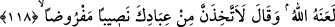

kendilerinin hiç bir fiil ve tesiri yoktur. Halbuki ibâdet edilen varlığın pasif değil, aktif
ve fâil olması lâzım gelir. İşte bu onların son derece câhil olduklarına ve fazlasıyla
ahmak olduklarına delildir.
“Dişiler”le meleklerin kastedildiği de söylenmiştir. Çünkü müşriklerin bir kısmı
meleklere ibâdet ediyorlar ve onların Allah Teâlâ’nın kızları olduklarını söylüyorlardı.
Allah Teâlâ şöyle buyurmuştur: “Âhirete îman etmeyen kimseler meleklere, dişilerin
adlarını veriyorlar.” (Necm, 53/27) Halbuki onlar her şeyin dişisinin en değersiz ve en
aşağılık olduğunu kabul ederlerdi.
Ve onlar putlara tapmakla “ancak inatçı şeytandan dilekte bulunuyorlar.” Çünkü
şeytan onlara o putlara tapmalarını emir ve teşvik etmiştir. Bu hususta şeytana itâatleri,
ona ibâdet etmek anlamındadır. Rivâyete göre bu putların her birinin, Kabe
hizmetçilerine ve kahinlere görünüp onlarla konuşan şeytanları vardı.
Zeccâc şöyle demiştir: “Buradaki şeytandan murad, bundan sonraki âyetin delâlet
ettiği gibi İblis’tir.” Kâbe’nin hizmetçilerine görünenin de İblis olması uzak bir ihtimal
değildir.
Âyette geçen “merîd”, hayırdan tamâmen alâkasını kesmiş, şerre soyunmuş, hayırsız
demektir. Üzerinde yaprağı olmayan ağaca “şeceretün merda” denilir. Yüzünde tüy
bitmeyen köseye de “gulâmün emred” denilir.
118- Allah onu (şeytanı) lânetlemiş; o da: «Yemin ederim ki, kullarından belli bir
pay edineceğim» demiştir.
“Allah onu (şeytanı) lânetlemiş;” Lanetlenmiş olma şeytanın ikinci sıfatıdır. Yâni
Allah onun cehennemde ebedî kalmasına hükmetmek sûretiyle rahmetinden
uzaklaştırmıştır. Bu îzah ile “Şeytan dünyâda iken ve her hâlükarda Allah’ın nîmeti
kendisine ulaşıyor iken nasıl olur da Allah ona lânet etti denilebilir?” diyen bir
kimsenin sözü sâkıt, yâni hükümsüz olmaktadır. Çünkü şeytanın cehennemde ebedî
kalmasına hükmedildiği için bu dünyâda olanlar nîmet sayılmaz.
“O” şeytan “da: “Yemin ederim ki, kullarından belli bir pay” yâni benim için takdir
edilen, almam vâcip olan, farz kılınan kimselerden bir pay “edineceğim” demiştir.”
İblisin farz kılınmış olan nasîbi, süslediği günahlarda ona itaat eden herkestir. Allah’ın
lâneti anında şeytandan sâdır olan bu çirkin söz onun insanlar için aşırı derecede
düşman olduğuna delâlet etmektedir.
Hasan Basrî şöyle demiştir: Şeytanın nasibi her bin kişiden dokuz yüz doksan
dokuzdur.” Nitekim “Meşârık”ta rivâyet edilen bir hadiste şöyle buyurulmuştur:
“Mahşerde Allah Teâlâ: “Ey Âdem!” diye seslenince o: “Buyur Allah’ım, emrine
âmâdeyim, hayır senin ellerindedir.” diye karşılık verir. Allâh Teâlâ: “Cehenneme